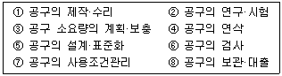
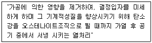
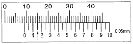
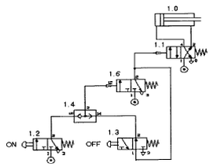

설비보전기사(구) (2012-09-15 기출문제)
1과목: 설비 진단 및 계측
1. 다음 중 탄성식 압력계에 속하지 않는 것은?
- 부르동관식
- 압전기식
- 다이어프램식
- 벨로스식
(정답률: 76%)

2. 금속류의 직접 접촉에 의한 소음을 막기 위해 윤활이 필요한데, 구름 베어링에 윤활을 필요로 하는 부분으로 적당하지 않은 것은?
- 전동체와 궤도면의 사이
- 리테이너와 궤도륜 안내면 사이의 미끄럼 부분
- 외륜과 베어링 하우징 사이의 접촉 부분
- 전동체와 리테이너 사이의 미끄럼 부분
(정답률: 66%)
3. 금속 전기 도체의 저항 크기를 좌우하는 요인들 중 옳지 않는 것은?
- 금속 전기 도체의 저항은 길이에 비례한다.
- 금속 전기 도체의 저항은 온도에 상관없이 일정하다.
- 금속 전기 도체의 저항은 그 단면적에 반비례한다.
- 금속 전기 도체의 저항은 금속의 종류에 따라 달라진다.
(정답률: 75%)
4. 다음 중 관로에서 유량 측정 방법이 아닌 것은?
- 벤투리미터(venturi meter)
- 피에조미터(piezometer)
- 노즐(nozzle)
- 오리피스(orifice)
(정답률: 70%)
5. 진동의 크기를 표현하는 방법으로 사용되는 용어의 설명 중 맞지 않는 것은?
- 피크값 : 진동량의 절대값의 최대값이다.
- 실효값 : 진동에너지를 표현하는 것으로 정현파의 경우는 피크값의 2배이다.
- 평균값 : 진동량을 평균한 값이다.
- 양진폭 : 전진폭 이라고도 하며 양의 최대값에서 부의 최대값 까지의 값이다.
(정답률: 83%)
6. 자계의 방향이나 강도를 측정할 수 있는 자기 센서는?
- 포토 다이오드(photo diode)
- 서미스터(thermistor)
- 서모파일(thermopile)
- 홀 센서(hall sensor)
(정답률: 81%)
7. 진동을 측정하기 위한 3가지 중요한 변수가 아닌 것은?
- 진폭
- 주파수
- 위상각
- 감쇠
(정답률: 58%)
8. 설비의 신뢰성을 평가하는 척도로 옳지 않은 것은?
- 고장률
- 고장 형태
- 평균 고장간격
- 평균 고장시간
(정답률: 82%)
9. 회전체에 반사테이프를 부착하고 초점 조정이 용이한 적색 가시광의 LED를 광원으로 이용하여 그 반사광을 검출한 후 신호를 변환시켜 회전주기의 역수로 회전수를 구하는 회전계는?
- 전자(電磁)식 회전계
- 접촉식 회전계
- 자기식 회전계
- 광전식 회전계
(정답률: 85%)
10. 진동 차단기의 올바른 선택과 유의 사항에 대한 설명 중 잘못 된 것은?
- 강철 스프링을 이용하는 경우에는 측면 안정성을 고려하여 직경이 큰 것이 안전하다.
- 하중이 크거나 정적 변위가 5mm 이상인 경우 강철 스프링의 사용이 바람직하다.
- 고무 제품은 측면으로 미끄러지는 하중에 적합하나 온도에 따라 강성이 변하므로 주의를 요한다.
- 파이버 글라스 패드의 강성은 주로 파이버의 질량과 모세관에 의하여 결정된다.
(정답률: 56%)
11. 회전축계에서 발생하는 이상 현상과 그때의 주파수 영역을 서로 연결해 놓았다. 관련성이 적은 것은?
- 저주파 - 기초 볼트 풀림이나 베어링 마모로 인해서 발생되는 풀림(이완, looseness)
- 고주파 - 강제 급유되는 미끄럼 베어링을 갖는 회전자(rotor)에서 발생되는 오일 요동(oil whip)
- 고주파 - 유체기계에서 국부적 압력 저하에 의하여 기포가 발생하는 공동현상(cavitation)으로 인한 진동
- 저주파 - 회전자(rotor)의 축심 회전의 질량 분포가 부적정하여 발생하는 진동
(정답률: 68%)
12. 특정 주파수 이상을 차단시켜 주는 필터는?
- 로우패스 필터
- 밴드패스 필터
- 하이패스 필터
- 주파수 패스 필터
(정답률: 61%)
13. 진동의 완전한 1사이클에 걸린 총시간을 무엇이라 하는가?
- 진동주기
- 진동수
- 각진동수
- 진동위상
(정답률: 85%)
14. 프로세스의 특성 중 입력 신호에 대한 출력 신호의 특성으로서 시간 영역에서는 인벌류션 적분이고, 주파수 영역에서는 전달함수와 관련된 특성을 무엇이라 하는가?
- 정특성
- 동특성
- 외란
- 주파수응답
(정답률: 77%)
15. 설비의 정밀 해석 기술로서 전문기술 부서에서 수행하는 기술은?
- 간이 진단 기술
- 정밀 진단 기술
- 고장 수리 기술
- 동작 해석 기술
(정답률: 85%)
16. 다음 중 진동 측정 단위로 적당하지 않은 것은?
- m
- m/s
- m/s2
- m2/s2
(정답률: 81%)
17. 진동센서의 설치 위치로 적합하지 않은 것은?
- 회전축의 중심부에 설치한다.
- 스러스트 베어링 장착부의 축 방향에 설치한다.
- 레이디얼 베어링 장착부의 수평 방향에 설치한다.
- 레이디얼 베어링 장착부의 수직 방향에 설치한다.
(정답률: 80%)
18. 비접촉형 변위 검출용 센서 종류에 해당되지 않는 것은?
- 와전류형
- 정전용량형
- 서보형
- 전자광학형
(정답률: 55%)
19. 송풍기나 공기압축기 등 공기동력기계의 소음 발생에 중요한 영향을 주는 요소에 대한 설명 중 적절하지 않은 것은?
- 회전속도 증가에 따라 소음도 증가한다.
- 날개 통과 주파수는 날개수와 회전주파수의 곱에 해당하는 주파수가 발생한다.
- 날개수를 증가시키면 대체로 소음은 감소한다.
- 불균일한 날개간격은 날개통과 주파수의 소음을 방지할 수 있고 제작비용의 절감, 기계의 동적균형유지 등 실질적인 효과가 커서 널리 사용된다.
(정답률: 69%)
20. 음향출력은 음원으로부터 단위시간당 방출되는 총 음에너지를 말하며 그 표시 기호는 W, 단위는 w(watt)이다. 음향 출력 W의 무지향성 음원으로부터 r(m) 떨어진 점에서의 음의 세기를 Ⅰ라 하면, 음원이 자유공간에서 점음원(point source)인 경우의 음향출력(W)과 음의 세기(I)의 관계로 옳은 것은?
- W = I × 4 πr2 [w]
- W = I × 2 πr2 [w]
- W = I × 2 πr [w]
- W = I × πr [w]
(정답률: 62%)
2과목: 설비관리
21. 공장에서 설비를 배치할 때 가장 중요한 평가 기준이 되는 것은?
- 각 설비간의 자재 이동 및 취급의 최소화
- 새공장건설의 예측화
- 기계 설비의 가동률의 최적화
- 배치 변경을 위한 융통성의 최대화
(정답률: 69%)
22. 공사의 완급도에 의한 구분에서 설비검사 및 공사 실시시기가 충분한 여유를 가지고 지정된 공사로서 일정계획을 세워서 통제하는 예방보전 공사는 무엇인가?
- 긴급공사
- 준급공사
- 계획공사
- 예비공사
(정답률: 76%)
23. 만성로스에 관한 설명 중 옳지 않은 것은?
- 만성로스를 제로(zero)화 하기 위해서는 관리도 분석 기법의 활용이 가장 바람직하다.
- 만성로스는 원인과 결과의 관계가 불명확하고 복합적 원인인 경우가 많다.
- 만성로스는 잠재하므로 표면화하기 어려운 경향이 있다.
- 만성로스 개선을 위해서는 특징을 충분히 파악하는 것이 중요하다.
(정답률: 70%)
24. 공장의 에너지관리 중에서 열관리의 방법에 해당되지 않는 것은?
- 연료의 관리
- 열변환의 관리
- 연소의 관리
- 열설비의 관리
(정답률: 66%)
25. 시스템의 탄생에서부터 사멸에 이르기까지의 라이프 사이클은 4단계로 나누어 볼 수 있다. 다음 중 1단계에 해당하는 것은?
- 시스템의 설계, 개발
- 제작, 설치
- 시스템의 개념 구성과 규격결정
- 운용, 유지
(정답률: 74%)
26. 기업의 생산성을 높이는 보전방식을 수단별로 분류 시 해당되지 않는 것은?
- 예방보전
- 개량보전
- 보전예방
- 품질보전
(정답률: 70%)
27. 설비의 경제성을 평가하기 위한 방법으로 옳지 않은 것은?
- 비용비교법
- 자본회수법
- MAPI방식
- MTBF법
(정답률: 65%)
28. 다음 중 설비관리조직의 개념이 아닌 것은?
- 설비투자를 합리적으로 할 수 있다.
- 설비관리의 목적을 달성하기 위한 수단이다.
- 설비관리의 목적을 달성하는데 지장이 없는 한 될수록 단순해야 한다.
- 구성원을 능률적으로 조절할 수 있어야 한다.
(정답률: 67%)
29. 활동기준 원가(ABC : activity-based cost)의 구성요소로 옳지 않은 것은?
- 활동
- 자원
- 원가유발요인
- 제조직접비
(정답률: 50%)
30. 계측기의 관리를 수행하기 위하여 준수되지 않아도 되는 것은?
- 관리규정
- 대상의 선정ㆍ구입
- 검사ㆍ검정
- 연구개발
(정답률: 77%)
31. 제조원가 추정 시 일반적으로 제조간접비는 간접배부율이라는 형태로 직접비에 할당하는데 다음 중 제조간접비를 배부하는 방법이 아닌 것은?
- 직접노무시간법(direct-labor-hours method)
- 직접설비비용법(direct-machine-cost method)
- 기계가동시간법(machine-hour-rate method)
- 직접노무비법(direct-labor-cost method)
(정답률: 46%)
32. 설비의 잠재 열화현상에 대한 정확한 상태를 예측하기 위하여 직접 설비를 감지(monitoring)하는 방법을 무엇이라 하는가?
- 운전 중 검사
- 부분적 SD(shut down)
- 계량보전
- 상태기준보전
(정답률: 66%)
33. 가공 및 조립형 설비손실에 포함되지 않는 것은?
- 고장 손실
- 속도저하 손실
- 공정불량 손실
- 시가동 손실
(정답률: 64%)
34. 설비의 갱신이나 개조에 의한 경비절감을 목적으로 하는 프로젝트를 무엇이라 하는가?
- 확장 투자
- 제품 투자
- 전략적 투자
- 합리적 투자
(정답률: 75%)
35. 선박 제조업, 건축업, 교량건설 등에 널리 이용되는 설비 배치 방법은?
- 제품별 배치
- 공정별 배치
- GT 배치
- 고정 위치배치
(정답률: 68%)
36. 치공구 관리의 주요 기능을 나열하면 다음과 같다. 치공구의 보전 단계에서 행해지는 주요 기능을 나열한 것은?

- ③-⑤-⑦-⑧
- ①-②-⑦-⑧
- ②-③-⑤-⑦
- ①-④-⑥-⑧
(정답률: 70%)
37. 고장, 품목변경에 의한 작업준비, 금형교체, 예방보전 등의 시간을 뺀 실제 설비가 작동된 시간을 의미하는 것을 무엇이라 하는가?
- 캘린더시간
- 휴지시간
- 조정시간
- 가동시간
(정답률: 77%)
38. 설비대장을 작성할 때 구비해야 할 조건 중 무시해도 되는 것은?
- 설비 품목별 사양작성자
- 설비의 입수시기 및 가격
- 설비에 대한 개략적인 기능
- 설비에 대한 개략적인 크기
(정답률: 67%)
39. 자주보전에 대한 설명 중 틀린 것은?
- 자주보전은 운전 부분에서 행하는 자발적인 보전 활동이다.
- 자주보전은 보전 요원들의 기술개발을 위한 시간 단축과 제조현장의 생산성을 극대화 한다.
- 자주보전의 핵심은 자기 운전 설비는 운전자가 스스로 관리함으로써 현장 개선의 일익을 담당한다.
- 자주보전 활동은 고장 및 불량을 극소화 하여 보전효율 달성을 목적으로 하는 체계화된 활동이다.
(정답률: 42%)
40. 설비의 설계에 의한 이론 사이클 시간과 실제 사이클 시간과의 차이를 무엇이라 하는가?
- 고장 로스
- 속도 저하로스
- 순간 정지로스
- 수율 저하로스
(정답률: 75%)
3과목: 기계일반 및 기계보전
41. 토출관이 짧은 저 양정(전 양정 약 10m 이하) 펌프의 토출관에 설치하는 역류방지 밸브로 적당한 것은?
- 체크밸브
- 푸트밸브
- 반전밸브
- 플랩밸브
(정답률: 67%)
42. 경도가 매우 높고 발열하면 안 되는 초경합금, 특수강 등의 연삭에 사용되는 숫돌입자는?
- A
- WA
- C
- GC
(정답률: 77%)
43. 다음의 열처리는 무엇에 대한 설명인가?

- 탬퍼링(tempering)
- 노멀라이징(normalizing)
- 어닐링(anneaaling)
- 퀜칭(quenching)
(정답률: 57%)
44. 고장 로스(loss)의 대책으로 잘못된 사항은?
- 고장 원인을 철저히 분석
- 보전요원의 보전품질을 높임
- 바른 사용조건을 준수
- 미세한 결함도 시정
(정답률: 52%)
45. 송풍기를 설치한 곳의 기초지반이 연약할 때 가장 큰 영향을 미치는 고장 발생의 현상은?
- 진동발생이 크다.
- 베어링이 과열된다.
- 시동 시 과부하가 발생한다.
- 풍량과 풍압이 작아진다.
(정답률: 82%)
46. 볼트 너트의 이완 방지법이 아닌 것은?
- 홈달린 너트 분할핀 고정에 의한 방법
- 절삭너트에 의한 방법
- 볼트를 햄머렌치로 조이는 방법
- 로크 너트에 의한 방법
(정답률: 67%)
47. 벨트 풀리의 제도법을 설명한 내용 중 틀린 것은?
- 벨트 풀리는 대칭형이므로 전부를 표시하지 않고 그 일부만을 표시할 수 있다.
- 아암은 길이 방향으로 절단하지 않는다.
- 아암의 단면형은 도형의 밖이나 도형 내에 표시한다.
- 테이퍼 부분의 치수는 치수선을 빗금 방향으로 표시해서는 안 된다.
(정답률: 58%)
48. 다음의 측정기구에서 비교측정기가 아닌 것은?
- 다이얼게이지
- 전기 마이크로미터
- 공기 마이크로미터
- M형 버니어캘리퍼스
(정답률: 69%)
49. 다음 중 교류아크 용접기의 종류가 아닌 것은?
- 가동 철심형
- 가동 코일형
- 엔진 구동형
- 탭 전환형
(정답률: 63%)
50. 유량교축용 밸브에 속하지 않는 것은 어느 것인가?
- 버터플라이 밸브
- 글로우브 밸브
- 니들 밸브
- 체크 밸브
(정답률: 62%)
51. 스프링 재료가 갖추어야 할 구비조건으로 적합하지 안은 것은?
- 가공하기 쉬운 재료이어야 한다.
- 열처리가 쉬워야 한다.
- 피로강도가 낮아야 한다.
- 영구 변형이 없어야 한다.
(정답률: 76%)
52. 감속기의 양호한 조립상태를 유지하기 위한 조치로 적절하지 못한 것은?
- 정확한 윤활의 유지
- 이 면의 마모상태 파악
- 빈번한 분해수리 실시
- 이상의 조기 발견
(정답률: 82%)
53. 압축기의 밸브 플레이트 교환요령에 관한 설명으로 맞는 것은?
- 교환시간이 되었으면 사용한계의 기준치 내에서도 교환한다.
- 마모한계에 달하였어도 파손되지 않았으면 사용한다.
- 밸브 플레이트는 파손이 없으므로 계속 사용한다.
- 마모된 플레이트는 뒤집어서 1회에 한해 재사용 한다.
(정답률: 82%)
54. 관용 나사(pipe thread)의 특징으로 맞지 않는 것은?
- 보통나사에 비하여 피치 및 나사산의 높이가 낮다.
- 관용테이퍼 나사는 축심에 대해 1/16의 테이퍼를 가진다.
- 관용테이퍼 나사는 평행나사에 비해 기밀성이 우수하다.
- 나사산의 각도가 75°이며 주로 미터(mm) 나사이다.
(정답률: 70%)
55. 신축이음에서 열팽창을 고려하여야 가스켓 선정 등 올바른 정비를 수행할 수 있다. 다음 중 온도에 따른 축의 신축량 λ를 구하는 공식은? (단, t : 온도차, ℓ : 길이, α : 열팽창계수 이다.)
- λ = 2αtℓ
- λ = παtℓ
- λ = tℓ / α
- λ = αtℓ
(정답률: 54%)
56. 다음 중 물체를 인양하거나 이동할 때 사용 되는 볼트는 어느 것인가?
- 관통 볼트
- 아이 볼트
- 스테이 볼트
- 나비 볼트
(정답률: 75%)
57. 다음 그림의 화살표로 지시한 버니어캘리퍼스 측정값은 얼마인가?

- 9 mm
- 9.1 mm
- 9.15 mm
- 15 mm
(정답률: 80%)
58. 스퍼기어의 정확한 치형 맞물림에 대한 것으로 맞는 것은?
- 치형 축 방향 길이 80% 이상, 유효 이 높이 20% 이상 닿아야 됨
- 치형 축 방향 길이 70% 이상, 유효 이 높이 30% 이상 닿아야 됨
- 치형 축 방향 길이 60% 이상, 유효 이 높이 40% 이상 닿아야 됨
- 치형 축 방향 길이 50% 이상, 유효 이 높이 50% 이상 닿아야 됨
(정답률: 72%)
59. 공기 중에서는 액체상태를 유지하고 공기가 차단되면 중합(重合)이 촉진되어 경화가 일어나는 접착제는?
- 금속구조용 접착제
- 혐기성 접착제
- 열용융성 접착제
- 유화액형 접착제
(정답률: 75%)
60. 다음은 크레인의 전동기 고장원인과 대책에 관한 설명이다. 틀린 것은?
- 전동기의 고장은 접전부와 회전자가 대부분이다.
- 접전부의 고장원인은 절연불량에 의한 것이 대부분이다.
- 시동시간이 너무 길 때에는 부하를 줄여햐 한다.
- 시동이 되지 않을 때는 전압을 바꿔보고 회로의 불량을 검사한다.
(정답률: 68%)
4과목: 윤활관리
61. KS M 2129는 유압작동유 KS 규격이다. 이 규격서에서 종류(점도등급) 15, 22, 32, 46, 68, 100, 150, 220은 다음 중 어떤 종류(점도등급)를 따른 것인가?
- NLGI
- ISO VG
- SEA
- ISO
(정답률: 70%)
62. 다음 각 용어에 대한 설명으로 잘못된 것은?
- 주도 : 그리스의 단단하기 즉, 그리스의 굳은 정도를 나타내는 것
- 적점 : 그리스 중에 함유되어 있는 수분과 저휘발성인 광유의 함유량을 나타내는 것
- 전산가 : 오일 중에 포함되어 있는 산성성분의 양을 나타낸다.
- 유동점 : 윤활유가 유동성을 잃기 직전의 온도. 즉 유동할 수 있는 최저의 온도를 말한다.
(정답률: 74%)
63. 다음 중 윤활유의 열화에서 내부변화인 윤활유 자체의 변질에 해당되는 것은?
- 희석
- 유화
- 산화
- 이물혼입
(정답률: 68%)
64. 다음 중 유압작동유의 유효한 성질에 영향을 많이 주는 것으로 철저히 관리해야 할 주요사항이 아닌 것은?
- 온도
- 공기의 혼입
- 이물질의 혼입
- 윤활성
(정답률: 62%)
65. 후막윤활이라고도 하며 가장 이상적인 유막에 의해 마찰면이 완전히 분리되는 윤활상태는?
- 유체 윤활
- 경계 윤활
- 극압 윤활
- 혼합 윤활
(정답률: 60%)
66. 다음 중 윤활유의 열화에 의해 나타나는 현상이 아닌 것은?
- 산가의 감소
- 점도변화
- 수분증가
- 색상변화
(정답률: 59%)
67. 순환급유를 하는 윤활개소의 유욕조를 관찰해 보니 거품이 많이 발생한다. 어떤 첨가제가 부족할 때 이러한 현상이 나타나는가?
- 부식방지제
- 산화방지제
- 소포제
- 유화제
(정답률: 79%)
68. 윤활제의 성질 중 액체가 유동할 때 나타나는 내부저항을 의미하는 것은?
- 동판부식
- 산화안정도
- 점도
- 중화가
(정답률: 75%)
69. 다음 중 플러싱(flushing) 시기로 적절하지 않은 것은?
- 기계장치 신설 시
- 윤활장치의 분해보수 시
- 윤활계통의 검사 시
- 윤활유 보충 시
(정답률: 75%)
70. 기어 윤활의 제반조건에 따른 그 대책을 잘못 설명한 것은?
- 온도 상승에 따른 점도저하 및 열화촉진 - 주위 온도에 따라 적정 점도 및 유량의 조정
- 하중 충격에 의한 기어의 소부 마모 - 극압 첨가제가 첨가된 기어유 사용
- 치면 접촉 분균일에 의한 소부 이상 마모 - 운전 초기 하중을 많이 걸고 충분한 길들이기 운전 실시
- 적정개소에 적정량의 윤활유 급유 부족에 의한 소부 이상 마모 - 사용 조건을 고려하여 적정 급유 방식의 선정
(정답률: 73%)
71. 액체 윤활에 비해 그리스 윤활의 장점이라 할 수 있는 것은?
- 냉각 작용이 크다.
- 밀봉성과 먼지 등의 침입이 적다.
- 급유 간격이 비교적 짧다.
- 질의 균일성이 높다.
(정답률: 67%)
72. 완전윤활 상태에서 경계윤활로 운전조건이 변화할 수 있는 요인이 아닌 것은?
- 윤활부위의 하중 증가
- 유막의 두께가 고체 표면 거칠기보다 클 때
- 기기의 시동 및 정지 전후
- 유온 상승으로 오일의 점도가 저하될 때
(정답률: 50%)
73. 사용 윤활제의 종류를 단순ㆍ통일화 시키는 목적과 거리가 먼 것은?
- 윤활 관리에 소요되는 코스트(cost) 절감
- 윤활제 급유기구 비용의 절약
- 재고관리 및 급유관리를 용이하게 함
- 공급업체의 다변화로 윤활관리 기술성 제고
(정답률: 77%)
74. 윤활유의 작용에 대한 설명으로 잘못 된 것은?
- 감마 작용
- 발열 작용
- 밀봉 작용
- 방청 작용
(정답률: 70%)
75. 왕복동 공기 압축기에서 내부 윤활유의 원인으로 발생되는 고장이 아닌 것은?
- 크랭크 샤프트의 마모
- 드레인 트랩의 작동 불량
- 탄소의 부착, 발화, 폭발
- 실린더나 피스톤링의 마모
(정답률: 57%)
76. 그리스 윤활법에 대한 설명으로 틀린 것은?
- 베어링 온도가 높을수록 급유주기는 짧아진다.
- 그리스 급유법으로는 그리스 건에 의한 수동급유법, 펌프 급유법, 기계식 및 집중 급유법 등이 있다.
- 고속 회전일수록 주입량을 많게 한다.
- 용도가 다른 그리스를 혼용하여 사용하지 않아야 한다.
(정답률: 74%)
77. 기계의 운전 중 윤활고장 현상으로 나타나는 직접적인 증상에 해당하지 않는 것은?
- 마찰부분의 손상
- 소음이나 진동의 발생
- 온도의 상승
- 동력비 감소
(정답률: 72%)
78. 오염도 측정법 중에서 질량법에 의한 방법으로서 NAS 오염도 등급을 기준으로 일반사용에서의 사용한계라고 할 수 있는 기준치는?
- NAS 3급
- NAS 5급
- NAS 7급
- NAS 12급
(정답률: 72%)
79. 설비보전 조직 내 윤활기술자의 임무에 대한 설명으로 틀린 것은?
- 보유설비의 윤활관계 개선개조
- 윤활제의 성분 분석 및 조성
- 윤활의 실태 조사 및 소비량 관리
- 윤활제의 선정 및 취급법의 표준화
(정답률: 55%)
80. 윤활유가 갖추어야 할 일반적인 성질로 맞지 않는 것은?
- 기기에 적합한 충분한 점도를 가져야 한다.
- 점도지수가 낮아서 고온 상태에서도 충분한 점도를 유지해야 한다.
- 한계 윤활 상태에서도 견딜 수 있는 유성이 있어야 한다.
- 산화에 대해서 안정성이 있어야 한다.
(정답률: 72%)
5과목: 공유압 및 자동화
81. 유압 에너지를 저장할 수 있는 유압 기기는?
- 압축기
- 저장 탱크
- 기름 탱크
- 어큐뮬레이터
(정답률: 75%)
82. 미리 정해진 순서에 따라 동일한 유압원을 이용하여 여러 가지 기계 조작을 순차적으로 수행하는 회로를 무슨 회로라 하는가?
- 카운터 밸런스 회로
- 시퀀스 회로
- 언로드 회로
- 증압 회로
(정답률: 79%)
83. 다음 중 공압 장치의 장점으로 틀린 것은?
- 압축 공기의 에너지를 쉽게 얻을 수 있다.
- 인화의 위험성이 없다.
- 제어 방법 및 취급이 간단하다.
- 균일한 속도를 얻을 수 있다.
(정답률: 63%)
84. 다음 중 유체의 흐름을 층류와 난류로 구분할 때 사용하는 것은?
- 연속의 법칙
- 베르누이 정리
- 레이놀즈 수
- 파스칼의 원리
(정답률: 64%)
85. 서보모터(servo motor)의 전동기 및 제어장치 구비조건에 해당되지 않는 것은?
- 고속운전에 내구성을 가질 것
- 회전수 변동이 크고 토크 리플(torque ripple)이 클 것
- 저속 영역에서 안전한 특성을 가질 것
- 유지 보수가 용이 할 것
(정답률: 73%)
86. 다음 중 릴레이의 기능이 아닌 것은?
- 전달 기능
- 선택 기능
- 증폭 기능
- 변환 기능
(정답률: 48%)
87. 설비보전의 효과측정을 위한 척도로 사용되는 지표가 올바르게 설명된 것은?
- 설비 가동률은 경제성을 의미한다.
- 고장 도수율은 신뢰성을 의미한다.
- 고장 강도율은 유용성을 의미한다.
- 제품 단위당 보전비는 보전성을 의미한다.
(정답률: 54%)
88. 3상 전동기의 과열 원인이 아닌 것은?(오류 신고가 접수된 문제입니다. 반드시 정답과 해설을 확인하시기 바랍니다.)
- 공진 현상 발생
- 과부하 운전
- 코일의 단락 및 군의 단락
- 단상 운전
(정답률: 55%)
89. 다음 중 연속적인 물리량인 온도를 측정하는 열전대의 출력 신호의 형태는?
- 2진 신호
- 디지털 신호
- 아날로그 신호
- 전류 신호
(정답률: 67%)
90. 실린더를 임의의 위치에서 고정시킬 수 있도록 밸브의 중립위치에서 모든 포트를 막은 형식의 4/3way 밸브 종류는?
- 세미오픈 센터형
- 클로즈드 센터형
- 탠덤 센터형
- 오픈 센터형
(정답률: 76%)
91. 공압 실린더의 설치형식에 따른 분류가 아닌 것은?
- 풋 형
- 플랜지 형
- 타이로드 형
- 트러니언 형
(정답률: 48%)
92. 공압 밸브 중 OR 논리를 만족시키는 밸브는?
- 셔틀(shuttle) 밸브
- 2압 밸브
- 파이롯 조작 체크 밸브
- 3/2-way 정상상태 열림형 밸브
(정답률: 74%)
93. 다음 회로에 대한 설명 중 옳은 것은?

- 1.2 밸브를 누르면 1.0 실린더가 전진하고, 1.2 밸브를 놓아도 계속 전진하며 1.3 밸브를 누르면 1.0 실린더가 후진하고, 1.3 밸브를 놓아도 계속 후진한다.
- 1.2 밸브와 1.3 밸브를 같이 동작시켜야 실린더가 전진하고 두 밸브 중 하나를 놓으면 즉시 후진한다.
- 1.2 밸브와 1.3 밸브를 같이 동작시켜야 실린더가 전진하고 두 밸브를 같이 놓아야 즉시 후진한다.
- 1.3 밸브를 누르면 1.0 실린더가 전진하고, 1.2 밸브를 누르면 1.0 실린더가 후진한다.
(정답률: 70%)
94. 유압유 중에 공기가 아주 작은 기포 상태로 섞여지는 현상 또는 섞여져 있는 상태를 무엇이라고 하는가?
- 캐비테이션(cavitation)
- 채터링(chattering)
- 점핑(jumping)
- 에어레이션(aeration)
(정답률: 58%)
95. 유압실린더의 속도 제어 중 실린더에서 유출되는 유압작동유의 유량을 제어하는 방식은?
- 미터인 속도제어 방식
- 미터아웃 속도제어 방식
- 블리드 오프 속도제어 방식
- 파일럿체크 속도제어 방식
(정답률: 68%)
96. 유압 펌프의 설명으로 맞는 것은?
- 기어 펌프는 외접식과 내접식이 있으며 가변용량형 펌프이다.
- 베인펌프는 기어펌프나 피스톤펌프에 비해 토출압력의 맥동이 크며 고정용량형만 있다.
- 유압 펌프는 유압 에너지를 기계적 에너지로 변환시켜 주는 장치이다.
- 유압 펌프에서 내부 누유가 많이 발생할수록 용적 효율은 감소한다.
(정답률: 46%)
97. 압축 공기의 생산에서 사용까지의 단계가 순서대로 올바르게 표현된 것은?
- 압축기 → 건조기 → 저장 탱크 → 서비스 유닛
- 압축기 → 저장 탱크 → 건조기 → 서비스 유닛
- 압축기 → 서비스 유닛 → 저장 탱크 → 건조기
- 압축기 → 저장 탱크 → 서비스 유닛 → 건조기
(정답률: 54%)
98. 핸들링(Handling)의 용어를 설명한 것으로 옳지 않은 것은?
- 반전(turnover) : 180°의 회전이나 선회에 의해 위치를 변경하는 것으로 부품을 거꾸로 위치시키거나 전후를 역전시키는 것
- 전환(diversion) : 기계로 공급되고 있는 부품을 교체하는 것
- 회전(rotation) : 부품 자체의 중앙부를 기준으로 위치를 변경시키는 것
- 선회(swivelling) : 부품으로부터 떨어진 지점을 중심으로 위치를 변경시키는 것
(정답률: 62%)
99. 자동화 시스템을 사용하는 일반적인 목적이 아닌 것은?
- 생산성의 향상
- 원가의 절감
- 품질의 균일화
- 생산설비의 고급화
(정답률: 75%)
100. 회전식 공기 압축기가 아닌 것은?
- 베인형
- 스크롤형
- 루트 블로워
- 다이어프램형
(정답률: 64%)